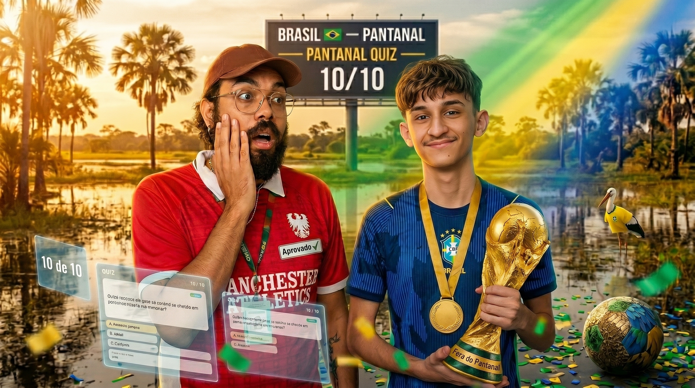

10 perguntas sobre o Pantanal
Teste seus conhecimentos sobre o maior bioma alagável do planeta.

0 de 10 acertos
Seu desempenho
0 / 10
10 perguntas sobre o Pantanal
Teste seus conhecimentos sobre o maior bioma alagável do planeta.
